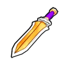

Guardarrégio
Adaga · Tier 6 · Nível 17
Uma lâmina implacável usada como último recurso pelos soldados da guarda real.
Atributos
Ataque
210
Economia
Valor
20.500
Tempo de fabricação
45min
XP do comerciante
12.500
Trabalhadores: Ferreiro 14, Joalheiro 1
Receita


Marcos do projeto
7
Tempo de fabricação -25%
16
-18 Ferro
30
Desbloqueia projeto: Peixeiro
45
Valor +25%
70
Chance de qualidade +1